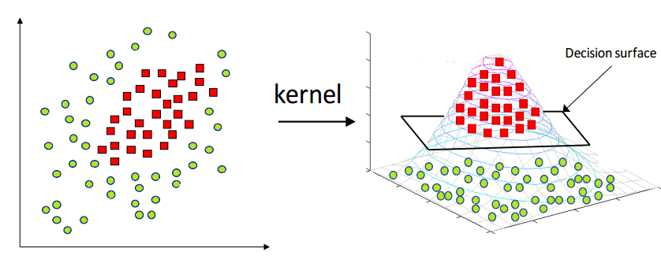

During the course of college, I have a lot of projects. However, I just show projects which is concerned about data science...
Artificial Intelligence
In this area, we will research many methods to make your computer smarter:
Support Vector Machine (SVM) is a supervised learning models with associated learning algorithms that analyze data used for classification and regression analysis. Example:
Suppose we have a two-dimensional data set X1, X2 that describes the house area and price, Y is a label that accepts to buy or not buy. Question: There is a new input (X1',X2'), let give the answer: buy or not buy ?
The simple solution is find the space like as: line, 3D-space, 4D-space,... to separate the label buy or not buy. After that, use that space to decide the new input is buy or not buy.

Despite the fact that there are countless the space like that. Which should we choose ???
Don't worry! SVM algorithm is the optimal algorithm. It always finds the best space base on the minimum distance between the margins.
(Euclid distance from the line wTX + b = 0 to the nearest point Xn, is called margin)
In my project, I use the MNIST dataset: a lot of from 0 to 9 handwritten digits images. After that, I will predict unlabel image to return the digit exactly.
Deep Convolutional Neural Networks (DCNN) is also a learning models with associated learning algorithms that analyze data used for classification and regression analysis. Example: From digit images which have label, we can extract feature 2 times (reduce the dimension after each execution). Then we will combine all feature together by fully-connected layer and use Softmax formula to calculate 10_digit's rate. Finally, we choose max rate and decide the output.
A* algorithm is a method used "heuristics" evaluation to find the shortest path. Example:
The Hungry Cat is finding food. Based on the scent, the cat came to the place to get food quickly!
(This way is only quick and not optimal ~ Just like a cat based on the feeling to moving.)
From a computer perspective, it is only a bit string: 0, 1. In this example, we have:
0 0 0 0 0 0 1
0 0 0 0 0 1 1
1 1 0 0 0 0 1
0 1 1 0 0 0 0
0 1 1 0 0 1 0
0 1 0 0 0 1 0
0 0 0 0 0 0 0
With 0: able to move, 1: not able to move.
My mission is find the shortest path with its own evaluation from point (0,0) to point (7,7). A* algorithm only builds "seemingly" routes towards the destination. The basic idea is to choose an An node that must satisfy the total cost from node A1 to the node An is smallest. During processing, program will mark to reconstruct the final path.
Data analysts ascertain how data can be used in order to answer questions and solve problems. They study what’s happening now to identify trends and make predictions about the future.
Clustering is the grouping of a particular set of objects based on their characteristics, aggregating them according to their similarities.
K-mean is a basic distance-based clustering method.
* Example: Give M samples which have N features. Let cluster them into K-cluster.
The basic idea is give randomly K point and compute the distance between them and sample points. Then sign sample point's label which has minimun distance in K-cluster into Kth. Repeat until there is no update.
This part will mention about some points of my thesis in university. I spent more 6 month to complete it.
My project is reconstruct a medical images which have some missing pixels region. As follows, from an crashed image, I will cluster 2 region: missing and un-missing. Then, my model will reconstruct missing region to reasonable, quilting and color consistency "completed region".
K-mean is a basic distance-based clustering method.
* Example: In below, I show 3 pictures which is the input, output, raw image.
The main method is combining Generative Adversarial Networks with contextual attention module (paper based [1]). The Generative Adversarial Networks (be abbreviated as GANs) has 2 stages: Generator and Discriminator.
The generator performs reconstruct processing from image to image through some convolutional and deconvolutional layer. The discriminator will be constraint for generator's output getting better and better: some features will reach to raw's features.
Specially, my generator model has 2 sub-networks: coarse and refinement networks. Both networks is autoencoder based model.
Coarse networks use vanilla convolution and dilated convolution to get more important information from local to global. It also help output be more color consistent and quilting.
Then, I use coarse's output to further more global information by find matching score in all region and spread evenly in stage 2. If don't have this stage, model will converge very slow.
I will show my demo:
(I apologize for the inconvenience because you have to download image from link . Then, click "Choose images" to pick image in local...)
 Then we will combine all feature together by fully-connected layer and use Softmax formula to calculate 10_digit's rate. Finally, we choose max rate and decide the output.
Then we will combine all feature together by fully-connected layer and use Softmax formula to calculate 10_digit's rate. Finally, we choose max rate and decide the output. The Hungry Cat is finding food. Based on the scent, the cat came to the place to get food quickly!
The Hungry Cat is finding food. Based on the scent, the cat came to the place to get food quickly!